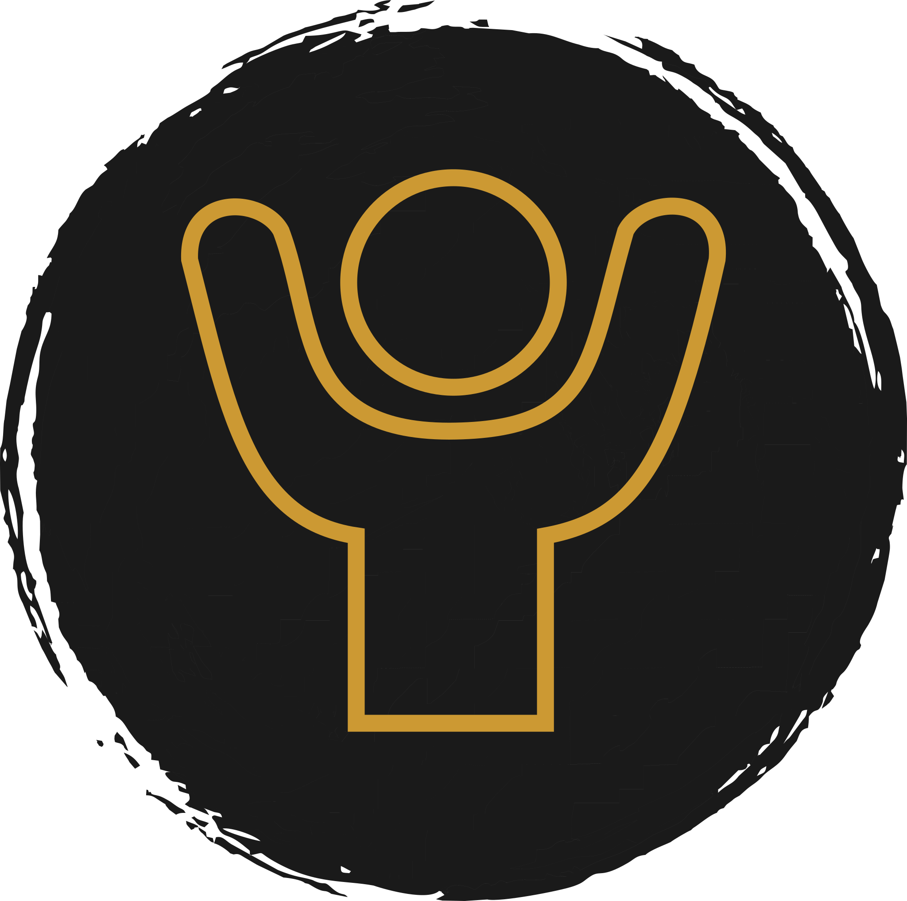
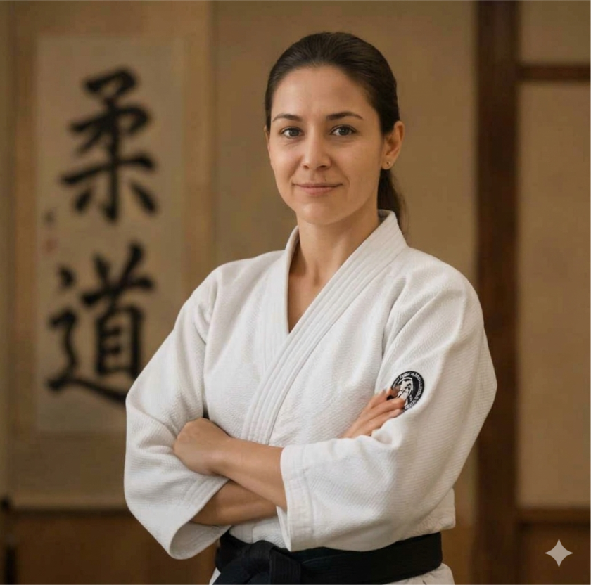
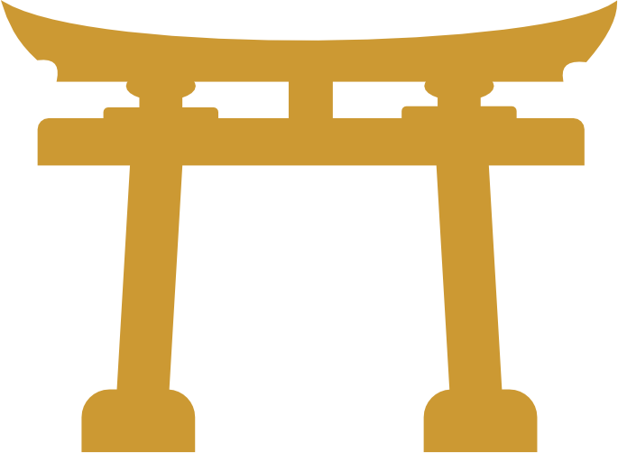

DISCIPLINA, RESPEITO E CONFIANÇA
PARA TODA VIDA!
Mais que um esporte, o judô forma
cidadãos dentro e fora dos tatames.
Benefícios do Judô
O judô é uma arte marcial que oferece inúmeros benefícios para o desenvolvimento físico, mental e social de seus praticantes. Abaixo, destacamos alguns dos principais pilares que a prática do judô proporciona:

1. DESENVOLVIMENTO FÍSICO E MENTAL
A prática do judô melhora a força, resistência, flexibilidade e coordenação motora. Estimula a concentração, o foco e a tomada de decisões rápidas.

2. RESPEITO E DISCIPLINA
O judô ensina o respeito aos colegas, instrutores e adversários. Incentiva a disciplina, o cumprimento das regras e o desenvolvimento do autocontrole emocional.

3. CONFIANÇA
Através do aprendizado progressivo das técnicas e da superação de desafios, os praticantes desenvolvem forte autoconfiança e autoestima cotidiana.

4. SOCIALIZAÇÃO
O judô promove a interação social saudável entre os alunos, incentivando o trabalho em equipe, a cooperação coletiva e a construção de amizades duradouras.
SOBRE O DOJO TERAZAKE
O Dojo Terazake é um espaço dedicado à prática do judô, promovendo disciplina, respeito e confiança para toda a vida. Nosso objetivo é formar cidadãos íntegros, tanto dentro quanto fora dos tatames.
Com uma equipe de instrutores qualificados e apaixonados pelo judô, oferecemos aulas para todas as idades, desde crianças até adultos. Acreditamos que o judô é mais do que um esporte; é uma filosofia de vida que ensina valores essenciais para o desenvolvimento pessoal.
Venha conhecer nosso dojo e descubra como o judô pode transformar a vida de seu filho!

Sensei
IRACI OLIVEIRA
Fundadora do Dojo Terazake com vasta experiência no ensino do judô. Com uma abordagem centrada no desenvolvimento integral, busca transmitir não apenas técnicas de judô, mas também valores que contribuem para a formação de cidadãos conscientes.

Nossa Missão
Promover a prática do judô como ferramenta de desenvolvimento pessoal, incentivando a disciplina, o respeito e a confiança em nossos alunos.
Informações e Matrículas
Agende sua visita ou entre em contato direto pelo WhatsApp
Horário de Funcionamento
Terças e Quintas: 19h às 21h
Sábados: 9h às 11h